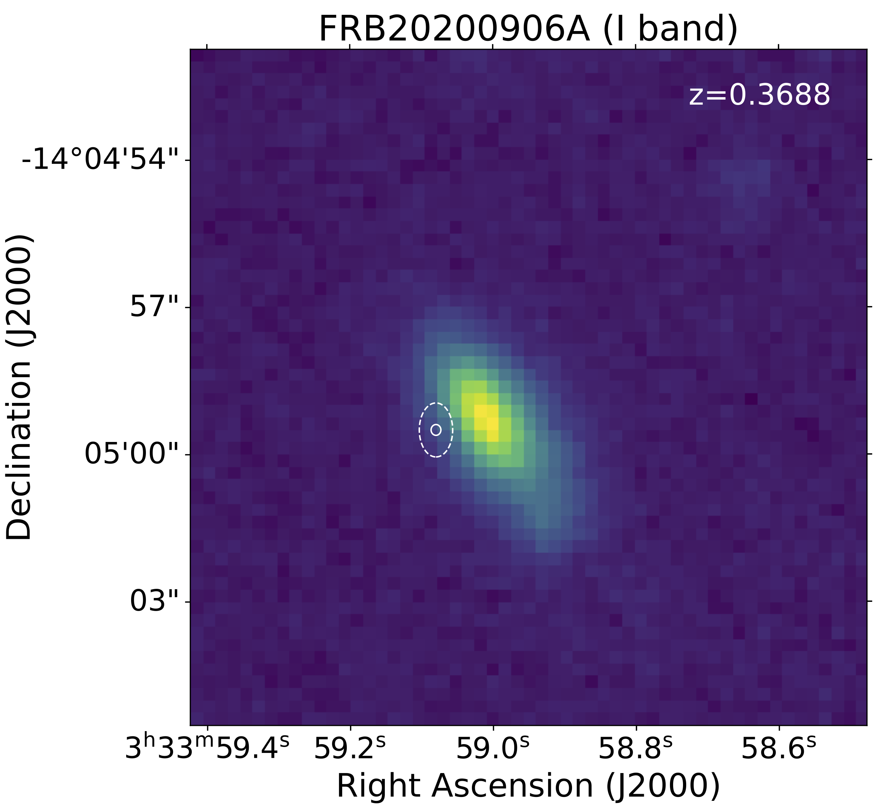

FRB 20200906A
Image from Bhandari et al., 2021 (ArXiv: 2108.01282)
Summary
- Detected by: ASKAP
- FRB coordinates (RA, Dec): 03:33:59.08 -14:04:59.5 (J2000)
- Host coordinates (RA, Dec): 03:33:58.99 -14:04:59.3 (J2000)
- Redshift: 0.3688
- Observed DM: 577.8 ± 0.02 pc cm-3
- Repeating: No
- References: Bhandari et al., 2021 (ArXiv: 2108.01282)
Host galaxy properties
| Quantity | Measured value | Unit |
|---|---|---|
| Stellar mass | (1.33 ± 0.37) × 1010 | M⊙ |
| Star-formation rate | 0.48 ± 0.14 | M⊙/yr |
| Metallicity | 8.76 | 12+log(O/H) |
| Absolute r-band mag. | -21.49 ± 0.05 | mag |
| u - r color (rest-frame) | 1.22 ± 0.11 | mag |
| Half-light radius | 7.58 ± 0.06 | kpc |
| FRB offset from galaxy center | 5.9 ± 2.0 | kpc |
Emission line fluxes
| Emission line | Measured value |
|---|---|
| Hα | 6.49 ± 0.07 |
| Hβ | 4.25 ± 0.14 |
| [OIII] λ 5007 | 5.38 ± 0.17 |
| [NII] λ 6584 | 1.80 ± 0.06 |